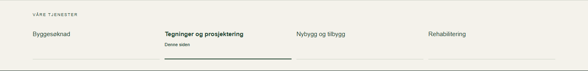
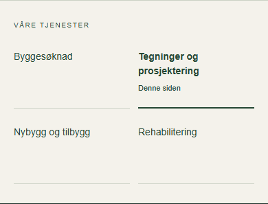
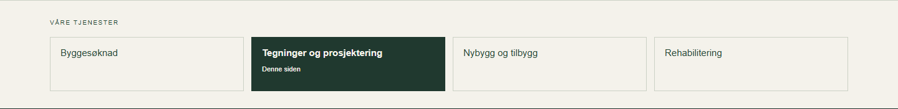
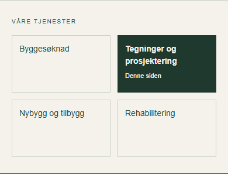
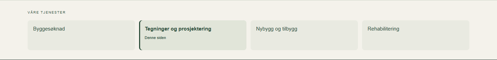
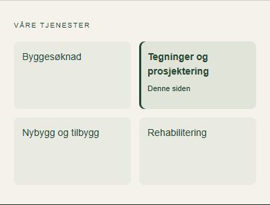
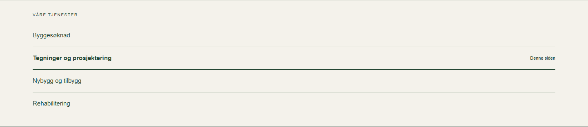
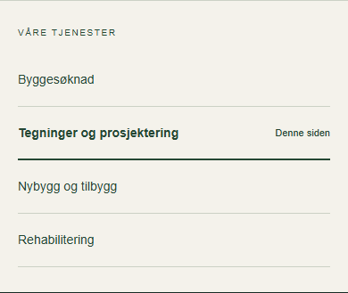

Valgt: B – fire tydelige felt. Like klikkflater og tydelig markering av siden du er på. Fire kolonner på PC, to på mobil. Bare «Våre tjenester»-feltet er endret.
Prøv valgt forslag →


Åpne og prøv hele forslaget →






Våre tjenester